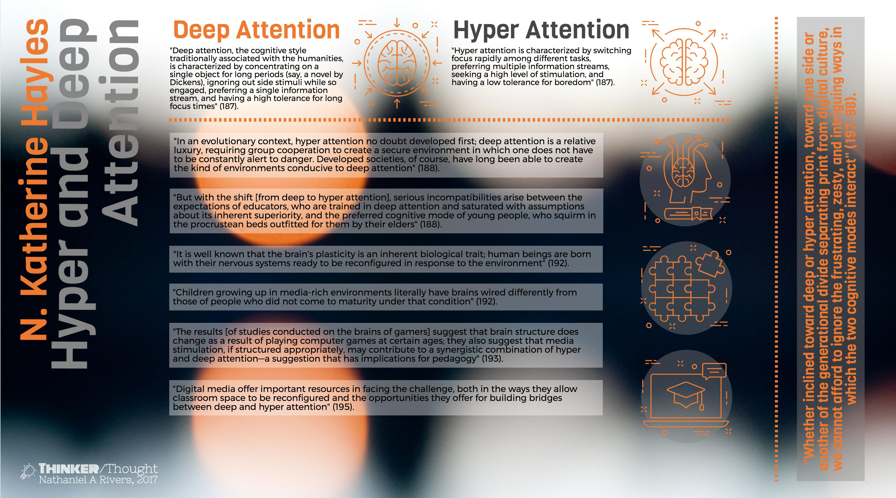
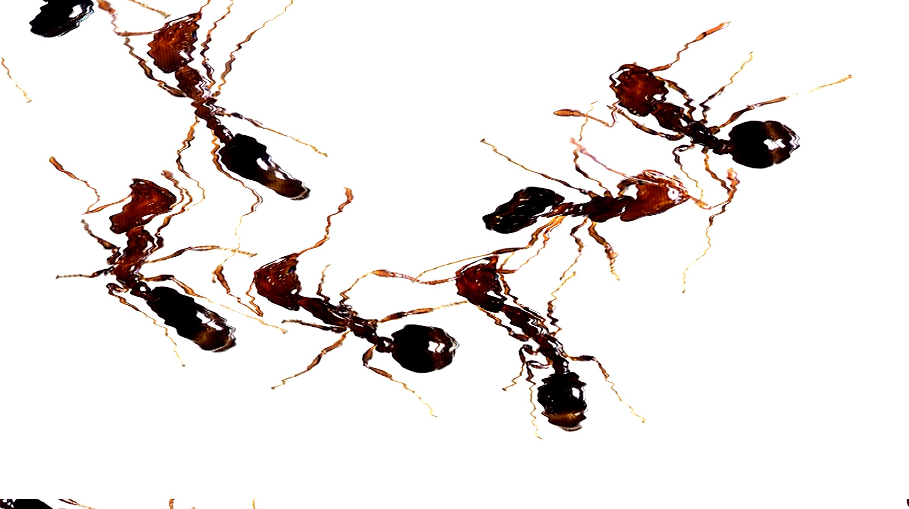
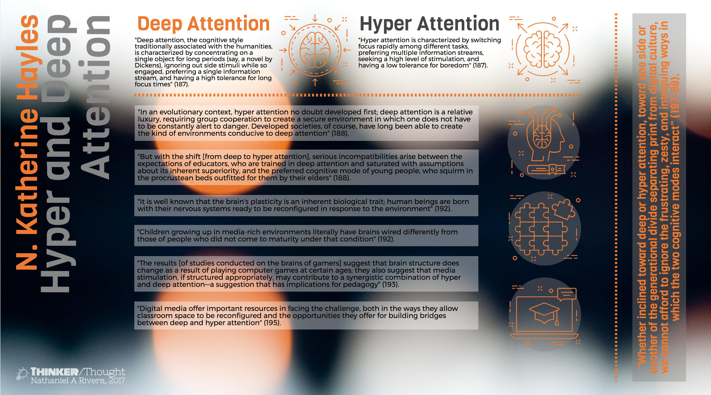
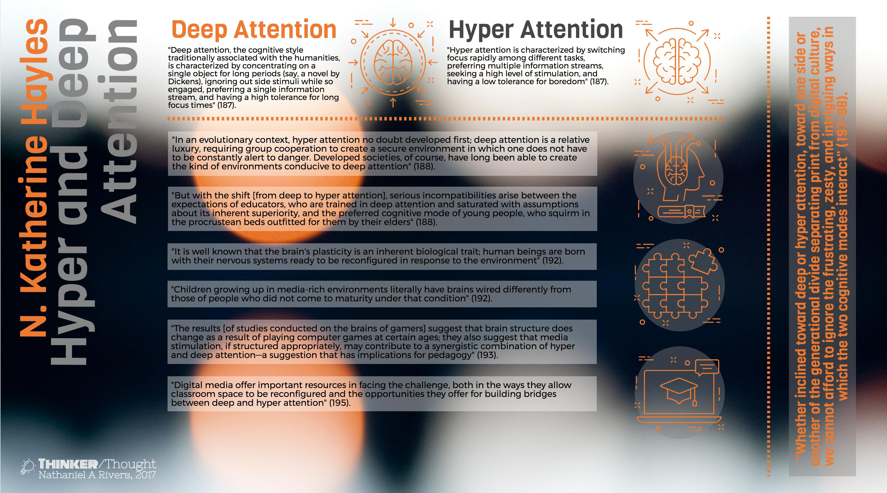

William James once said, “Everyone knows what attention is.” Let’s assume we don’t.
Teaching
Engaging the ethical implications of pedagogy: if education is more than objective knowledge-banking, then it is certainly more personal, more participatory, and thus much more ethically precarious.
Researching
Tracing ecological rhetorics wherein rhetoric is produced between and among bodies, human and nonhuman, through both discursive and non-discursive activity.
Writing
Composing a book titled Geocomposition, which articulates a practice of digital rhetoric designed to exploit how rhetoric moves and how this movement shapes relations and composes places.
Portfolio
Along Which I Attend
Practiced Attention
Text
Attendere
Video
Technology Wants
Audio
Attention, Hyper & Deep
Infographic
Protest Mechanics
Video
Composing Attention
Text
Practiced Attention
An introduction to the work of attention.
Attention is frequently treated as a possession that must be captured and corralled. As a limited and therefore prized commodity, attention is what must be secured in order to entertain or educate an audience. “A reader or listener,” Herbert Spencer wrote in 1852, “has at each moment but a limited amount of mental power available.” This is why, for Spencer, language must itself be economical: it must husband the fragile sensitivities of our faculties. Or, as Chad Wellman has recently put it, “It’s as though I wake up every morning with 100 units of attention. And it’s up to me to manage them well.”
But what if attention isn’t something we pay, but something we practice? What if we attended to attention as something shared between the human and her environment? In this seminar, we will explore and practice different ways of attending rooted in your work as an English major: literature, creative writing, and rhetoric can all be understood as modes of attending. This seminar invites students to practice all three in turn, and to do so as part of a fully public but also deeply personal investigation into how we attend, to what ends, and by which means.
William James once said, “Everyone knows what attention is.” Let’s assume we don’t.
Attendere
A short video thinking through N. Katherine Hayles's work on hyper and deep attention attention and the implications of video for both.
Technology Wants
A short audio essay that uses audio itself to make sense of Kevin Kelly's What Technology Wants.
Attention, Hyper & Deep
A simple (and overly simplistic) infographic that gestures toward how we tend to think of attention in online, networked spaces.

Protest Mechanics
A group of protestors attempted to block a major interstate in St Louis County (of which the city of Saint Louis is not a part). Law enforcement responded in force. I analyzed this act of civil disobedience in terms of spatial rhetoric. This I present as a short video, allowing the audience to keep the images I worked with front and center. Published as part of my piece Ecologies of Race in the Public Rhetoric Classroom."
Composing Attention
In multiplying composition’s objects in response to our disciplinary turn to the digital, we can branch out in any number of directions. In this short essay, I re-focus on attention: an object that continues to organize rhetoric and composition. Within and without rhetoric, attention is frequently treated as a possession that must be captured and corralled. As a limited and therefore prized commodity, attention is what must be secured in order to entertain or educate—to move—an audience. Working with Bruno Latour, I argue that attention should be treated not as a (uniquely human) commodity, but as a composition progressively composed across human and nonhuman actors. Attention isn’t simply an a priori human possession, but is instead a contingent attunement tightly bound to material relations across bodies, environments, media, and other nonhumans. Originally published at enculturation.
“You have not been paying attention.” -Radiohead, “2+2=5”
In multiplying composition’s objects in response to our disciplinary turn to the digital, we can branch out in any number of directions. In this short essay, I want to re-focus on attention: an object that continues to organize rhetoric and composition. I want to double down on Cynthia Selfe’s call to pay attention to technology by attending to how technology shapes what attention is in the first place. Attention has always been woven into rhetoric, but I focus on it here for several kairotic reasons: attention now sits at the intersection of cognitive science and digital technology, which are presently both chief concerns within rhetorical studies. In the contemporary public imagination as well, technology and attention tend to come as a pair. We can hardly discuss one without the other. Furthermore, cognitive science tends to be the ground of such discussions. For example, media scholar Clay Shirky recently banned some technology from his classrooms, citing volumes of cognitive science research on attention and distraction. Attention, when discussing technology, becomes a litmus test, or, at times, a shibboleth.
Within and without rhetoric, attention is frequently treated as a possession that must be captured and corralled. As a limited and therefore prized commodity, attention is what must be secured in order to entertain or educate—to move—an audience. This understanding has a history—it’s part of the rhetorical tradition. I am thinking here of Herbert Spencer’s 1852 “economy of attention.” “A reader or listener,” Spencer writes, “has at each moment but a limited amount of mental power available” (1155). This is why, for Spencer, rhetoric must itself be economical: it must husband the fragile sensitivities of our faculties. Or, as Chad Wellman has recently put it, “It’s as though I wake up every morning with 100 units of attention. And it’s up to me to manage them well.” In our contemporary, media saturated world, we speak of and to, so the story goes, audiences whose attention is increasingly divided. In his Economics of Attention, Richard Lanham writes, “It will be easier to find our place in the new regime if we think of it as an economics of attention. Attention is the commodity in short supply” (xi emphasis added). While Lanham certainly would not recommend the perspicuity of Herbert’s industrial rhetoric, both see attention as a prized commodity preexisting in and possibly stable through rhetorical interaction.
While not an academic, and so perhaps not a fair target, Nicholas Carr, in his book The Shallows, fruitfully congeals the view of attention I want to complicate, or, better yet, intensify. He unpacks the black box of attention in the ways Lanham does not, but his tracing is not complex enough or, as I’ll argue, risky enough. Carr is correct of course when he writes that attention is “a genuine physical state, and it produces material effects throughout the brain” (193). I neither can nor want to take on neuroscientists and psychologies and the volumes of research they have produced on how attention works. However, I do think that it matters through which ontological assumptions that research is conducted and re-cognized. It matters, and the metaphors of control, brain, surplus, choice and resource, while disclosing much, move us to work against rather than with digital technologies, which can only ever be threats in such a metaphysics. “We cede control,” Carr writes, “over our attention at our peril” (195). Attention is a finite, cognitive resource that must be employed by intentional, autonomous and sovereign actors.
For the sake of digital rhetoric and for productive, but no less critical, engagements with the technology, I want to loosen this all up a little bit: to cede control or to acknowledge the precariousness of that control to begin with. As Thomas Rickert writes in Ambient Rhetoric, “Attention attends to the salient, but the bringing forth of salience is itself a complex activity that has ambient dimensions” (xi). Let’s get out of Carr’s own shallows and into some deeper, admittedly riskier waters. Rather than simply fitting digital tools into existing paradigms of attention, we can speculate as to what else attention might become, or what else attention will have been. As William James famously put it, “Everyone knows what attention is.” Let’s assume we don’t.
Working with Bruno Latour, I argue that attention should be treated not as a (uniquely human) commodity, but as a composition progressively composed across human and nonhuman actors. Attention isn’t simply an a priori human possession, but is instead a contingent attunement tightly bound to material relations across bodies, environments, media, and other nonhumans. Smart phones, iPods, digital cameras, and Garmins aren’t simply challenges to attention; they are part of what progressively composes attentions. In short, attention is a thing with which we have to deal. I here take a “thing” to be more robust than is typically presumed. In the introduction to Making Things Public, Latour reminds us that “thing” “designated originally a certain type of archaic assembly” (12). Before it designated that which was other than human, a thing was that which “brings people together because it divides” (13). Far from passive and peripheral, things are what gather humans and nonhumans together: they are seductive, sectarian, and solicitous of discourse. As a Latourian thing, attention is not what’s brought to bear on, given, distracted or captured, but rather what is always at stake in any interaction—it is an assembly, and it is one that emerges kairotically.
To theoretically, methodologically, and pedagogically explore the intersections of attention and digital rhetoric, I describe a collaborative project I built around geocaching: “an outdoor recreational activity,” wherein participants use Global Positioning System (GPS) devices (e.g., handheld receivers and GPS enabled smart phones) to “hide and seek containers, called ‘geocaches’ or ‘caches’” (“geocaching”). Geocaching generally proceeds in the following way: a group of students use a handheld GPS device to navigate to a set geographical coordinates. Using these coordinates alongside the geocache’s description, which includes a hint, they locate the hidden container. This description was published on the official geocaching mobile application (and website) after having been approved by a volunteer within the geocaching community. The group finds a small geocache in the form of a magnetized container. The container is surreptitiously attached to the underside of lid for a metallic trashcan. The students date and sign a paper log located inside the geocache container to record their find. Using the official geocaching mobile application on their GPS enabled smart phone, they likewise log their find electronically. This log lets other geocachers know what they think about the cache and/or its location—in this case, adjacent to the Fabulous Fox Theater in Midtown Saint Louis. Before leaving the location, the students snap a picture of the view of the theatre from the trashcan, which they choose not to post as it gives away the location of the container. Later reflecting as a group on the experience, the students write, “In finding the geocache the hunter is rewarded with a wide view of the Fox, helping them to get an idea of the surrounding buildings and streets, which provides another way to observe the environment.” This activity is geocaching, which I treat as particular activity of attention formation through both digital and analog media and as a synecdoche for the formation of attention generally.
Geocaching also gets me to ANT (or actor-network-theory), and for much the same reason that Latour hangs onto it despite not liking the words “actor,” “network,” or “theory”: the acronym “was perfectly fit for a blind, myopic, workaholic, trail-sniffing, and collective traveler” (9). To watch someone geocache is to watch an ant at work. In his introduction to ANT, Latour articulates its five uncertainties: “no group, only group formation”; “action is overtaken”; “objects too have agency”; “matters of fact vs. matters of concern”; and “writing down risky accounts,” which all attend to controversies that allow for “the social to be established and the various social sciences to contribute in its building” (25). Traced through the uncertainties of ANT, attention becomes not an explanatory resource but a lively controversy, which is fraught with and activated by risk and uncertainty. Attention has not yet been assembled once and for all; it is always being composed, and ANT helps us to trace this.
With the first uncertainty, “No group, only group formation,” Latour is adamant that the duty of sociologists “is not to stabilize […] the list of groupings making up the social” (29). Rather than stabilizing, the work of sociologists is to follow the actors as they form associations (30-31). For a sociologist, then, there can be no already formed groups to which they can then appeal to in explaining the behavior of that group; there is only the work of associating. Rephrased, Latour’s first uncertainty becomes there is no attention, only attention formation.
An example of this comes from a collaborative student meditation on a median, which they were drawn to by the placement of a geocache. Both the median itself and the geocache container placed there attend to the formation of attention—they also seek to tentatively describe the ambience through which and within which salience emerges.
Medians were installed as safety measures—mainly as a measure to prevent head-on collisions between opposing lanes of traffic—attempting to maintain established channels of road traffic. Medians create and are spaces in the middle of the road. These spaces, however, are not themselves designed to be accessible (or particularly desirable) by any notion of traffic—pedestrian, automobile, or otherwise. Here, a group of young scholar-warriors intervene and recreate the space, charting a new understanding of the landscape within an already charted (and often neglected) space. Whereas the original recipe of the median called for safety via exclusion, these whipper-snappers whipped up danger via inclusion. To access the median, these potential martyrs of rhetoric were forced to interact with—and as a result become part of—traffic in ways discouraged by the design.
Now, it is easy enough to read this as a narrative of paying attention. But that reading narrowly focuses on the intentional behavior of the students, rather than the mediated, ambient environment from which salience emerges. That is, attention cannot be used to explain what happens here in the median; it is the median and its constituents that are assembling attention.
Latour’s privileging of formation, as we have already seen, is shot through with the second uncertainty “action is overtaken.” The work of forming groups, is not, strictly speaking, intentional. “Action is not done under the full control of consciousness; action should rather be felt as a node, a knot, and a conglomerate of many surprising sets of agencies that have to be slowly disentangled” (44). In this way, “action is overtaken” (45), inasmuch as any action is shot-through with “mediators triggering other mediators” (59). Action is without a definitive source: it is porous always.
Attention forms in surprising sometimes counter-intuitive ways. A telling, if troubling, example, quite explicitly manifests this uncertainty. It concerns a geocache hidden adjacent to the Sheraton Hotel in Downtown St. Louis. To set up the best view of a mural, which spans three sides of the building, the container was hidden near an underpass. The geocache is likewise near a light rail stop and Greyhound bus terminal, both of which are well-trafficked. This geocache becomes more a less difficult to find depending upon the presence of travelers and homeless individuals who likewise use the underpass for shelter. Several geocachers have commented upon this in their logs with varying degrees of either empathy or callousness. “Looks like [a] troll has taken up residence as bedding was left on left-center ‘shelf.’ Didn’t want to disturb same, so container may be behind.” “We also saw evidence that there may be someone camping out a few feet from GZ [geocaching zone]. Someone’s belongings/blankets were neatly stashed nearby.” “Watch for beggars. I had some change so I got them to leave quickly.” Attention forms here in several ways as a knot of surprising agencies beyond the intent of the student who hid and described the geocache. Whatever attention might be composed by this geocache, its formation is forever shot through with others. Geocaching is both overtaken by the same and serves to record the other actors that mediate our attention.

The above language of surprising agencies merges nicely with the third source of uncertainty: “objects too have agency.” Latour argues, “there might exist many metaphysical shades between full causality and sheer inexistence. In addition to ‘determining’ and serving as a ‘backdrop for human action’, things might authorize, allow, afford, encourage, permit, suggest, influence, block, render possible, forbid, and so on” (72). In terms of ANT, the question “to ask about any agent [is] simply the following: Does it make a difference in the course of some other agent’s action or not” (71)? Our attention, again, is not ours alone.
Geocaching is built upon locative media: portable media designed both to function while moving and to work within the confines of physical locations. As media scholars Eric Gordon and Adriana de Souza e Silva write, locative media “are connecting us to the physical world and providing a framework for geographically located social interactions” (61). The reliance on locative media in geocaching discloses the constitutive force digital technology has on attention formation. Gordon and de Souza e Silva articulate place-based mobile games such as geocaching as models for how networked technologies make location matter. It is this networked connectivity that makes possible the other effects geocaching can produce. These effects inhere across the various media used “[augment] the physical world with hidden play pieces and provides a premise for which to travel through familiar and unfamiliar spaces” (67). Attention emerges from connectivity made possible with and through such actors as locative media.
Jason Farman describes “The collaboration between the mobile device and GPS satellites” that “positions the human body within space, yet it is the experience of the space coupled with a reading of location that imparts meaning to the space” (49). Our attention in space is generated at the intersection of bodies, media, and locations. Farman, like Gordon and de Souza e Silva, emphasizes the formation of both place and attention through social interactions mediated by networked, digital technologies. Geocaching traces to the formation of attention across human and nonhuman actors.
To introduce the fourth uncertainty, “Matters of fact vs. matters of concern,” Latour describes the experience of walking on a construction site and “the troubling and exhilarating feeling that things could be different, or at least that they could still fail” (89). Such is the benefit of a construction site, which allows us to experience uncertainty far more intensely than we might in response to a supposedly finished project. Matters of concern, which balance matters of fact, introduce “highly uncertain” and “loudly disputed” agencies that are nevertheless “real, objective, atypical and, above all, interesting” (114). Matters of concern disrupt that is presumed to be settled and established: they generate uncertainties that allow us to attend anew.
The very act of geocaching something works to render it as a matter of concern: it is a practice of disruption designed to render interesting agencies. The example of the Lounging Woman geocache works here. A student writes in her description of the geocache:
This piece of art is something of a controversy. The plaque at the site indicates that the statue was created by the artist Michael Atkinson and named Emmy, but other sources indicate that this is not the case. In fact, most research points to the artist being David L. Phelps, and that statue’s name as Nancy. Nancy was originally located on SLU’s campus, but was removed shortly after installation due to Nancy’s ‘risque’ topless lounging pose. Many were divided on the issue; parents and students alike lodged complaints with the university, claiming it to be inappropriate and unnecessary. On the other hand, some were concerned that removing it would be a sign of too much censorship. Today, Nancy (or rather, Emmy) can be found in her new home, removed from the campus, soaking up rays just a short distance from a frozen yogurt shop. To any parents with their children, keep in mind the woman in the statue is not wearing any clothes.
Controversy attends to things, and attention emerges through controversy. Here we need to keep in mind Rickert’s caveats regarding salience. To make something a matter of concern is not simply to actively render it significant—not meaning making exactly. To compose a matter of concern is to make something less solid—risky. Matters of fact are rendered matters of concern through geocaching, which is an activity with strong ambient dimensions: it is more than simply paying attention. The cold fact of the statue becomes a matter of concern through the geocache, its placement, its description, and the mediated means by which individuals come to access it. Again, we could certainly say that the geocache gets the player to pay attention, but it’s more productive (and more interesting) to see how attention was composed rather than grabbed.
Such productivity, as inventional potential, comes to the fore in the fifth and final uncertainty, which involves the composition of what Latour calls “risky accounts” (121). Latour’s description of the risky accounts begins with him asking “How can we absorb so many controversies?” (121).
It’s because ANT claims to renew what it means to be a science and what it means to be social, that is has also to renew what is an objective account. The word does not refer to the traditional sense of matters of fact—with their cold, disinterested claims to ‘objectification’—but to the warm, interested, controversial building sites of matters of concern. (125)
The risky account here builds on matters of concern and the uncertainties they reintroduce. The risky account seeks to use the mess made by matters of concern to recompose a particular scene.
Risky accounts increase exponentially the number of actors and associations that compose the social by tracing “the ability of each actor to make other actors do unexpected things.” (129). The work of risky accounts brings us full circle to the first uncertainty: no attention, only attention formation. To trace the formation of groups requires following actors to we know not where. We see the opportunity for such risky accounts emerge everywhere we seek to discuss the activity of geocaching.
What we can buy with the cache is the opening up of attention provided by the risky account that is geocaching. The payoff for unpacking attention is the inventional potential, as another area of rhetoric wherein kairos, contingency, embodiment, and mediation are all at play. Geocaching becomes a speculative resource in order to imagine what else attention might be. Here Jeff Rice’s Digital Detroit become crucial as a model for tracing a network of attention at risk. Rice’s version of Detroit emerges through the riskiness of his accounting procedures. His predilection for avoiding the normal and normative critical pathways, or ruts, of our standard academic moves informs my own risky account of attention. He writes, “the rhetoric that surrounds urban affairs—from development to critique—seldom takes seriously how and where multiple meanings within one or more categories may move in a given rhetorical situation or space” (66). Rice’s importance for thinking through attention and technology is particularly clear when he advocates for “a broader understanding of place that recognizes how various forces coming together (and, we might assume, breaking apart) lead to a place’s shifting and moving status [...] Place moves” (35). Such an understanding proves productive in positioning the locative activity of geocaching. “I am interested in the complex interchanges of data that make up a given spatial relationship,” Rice writes, “and how we might engage with those exchanges for urban planning, rhetorical production, and technological applications” (54).
The example of geocaching works not to demonstrate how students can, despite worries to the contrary, be taught to pay better attention, but how attention itself is contingently refigured by material relations, in particular those mediated by digital technologies such as locative media. Moving forward in digital rhetoric, the task is not just to measure a new digital tool against “attention” but to slowly trace the very composition of attention in action, each and every time: this is the risky account full of many matters of concern. There is an instinct within the digital—as it bears on attention—to think in terms of or to call for the management of attention. Both Herbert Spencer’s and Richard Lanham’s “economics of attention” point toward this. It probably comes as no surprise that even a cursory review of Amazon reveals any number of books with titles like How To Focus: How To Stay Focused In The Age Of Information Overload So You Can Zero In On Your Success and The Poverty of Attention: How to Improve Concentration and Stay Focused. So long as attention is a human commodity, the task of those critically and productively engaging digital, rhetorical environments will be yoked to the logic of economics and so to the language of management. This we must resist critically and pedagogically.
Rather than more or less attention, could we think of different attentions, which are each complexly composed? What kinds of experiments would we construct? What unexpected results might emerge? The goal of a risky account is to “trigger in a good reader this reaction: ‘Please, more details, I want more details’” (Latour 137). I am for the risky account of ANT, rather than Carr’s reactionary one. I am for the invention of attention, rather than its management. A qualitatively different kind of attention can be composed if we first treat attention as itself a composition. What might we in rhetoric have to learn from geocaching, which makes of attention a thing we collectively compose, human and nonhuman alike?


 
